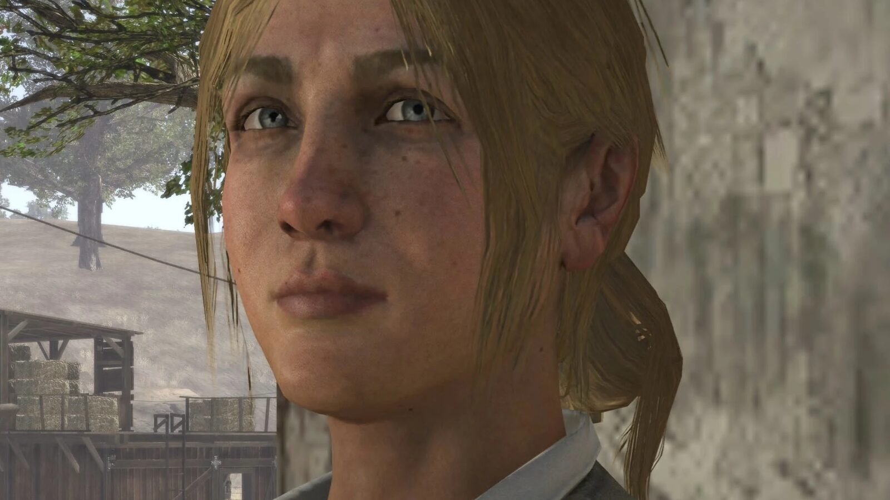
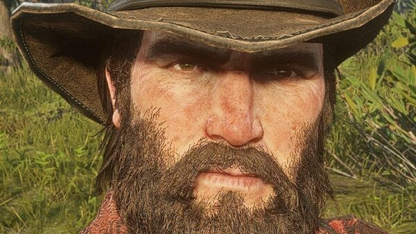
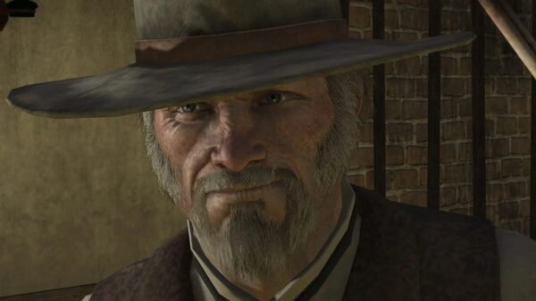
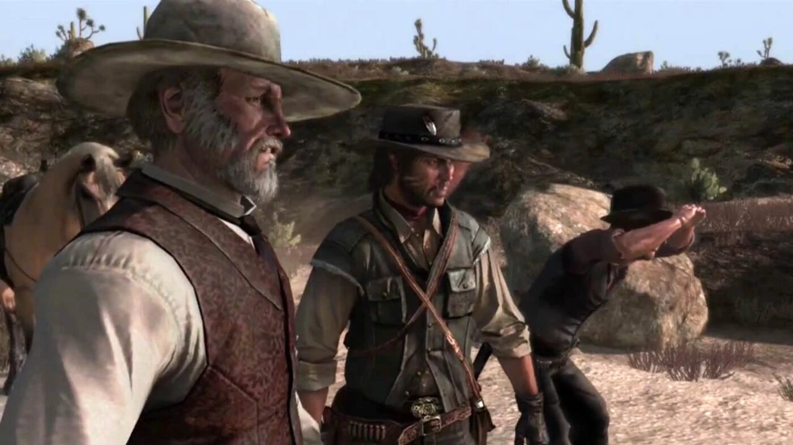

Character · New Austin
Bonnie MacFarlane
Bonnie MacFarlane is the daughter of the rancher Drew MacFarlane and one of the first people John Marston meets in Red Dead Redemption. She finds John shot and left for dead after his failed confrontation with Bill Williamson at Fort Mercer, and nurses him back to health at MacFarlane's Ranch.
She lives and works at the ranch in Hennigan's Stead, in the state of New Austin, and becomes John's closest ally during his time in the territory.
- Born
- c. 1884
- Status
- Alive (end of RDR1)
- Nationality
- American
- Home
- MacFarlane's Ranch, New Austin
- Games
- Red Dead Redemption
Biography
Saving John Marston
Bonnie finds John wounded near the ranch, pays a doctor fifteen dollars to treat him, and lets him recover in exchange for ranch work. He earns his keep breaking horses, herding cattle and clearing rustlers across Hennigan's Stead.
The barn and the hanging
In "The Burning", Williamson's men set the ranch barn on fire and John rescues the horses. In "Hanging Bonnie MacFarlane", the gang kidnaps her and tries to hang her at Tumbleweed to trade for a jailed ally; John saves her, and Marshal Leigh Johnson takes her back to Armadillo.
Personality
Bonnie is practical, tough and proud of the ranch her family built. She is the one person John willingly tells about his outlaw past.
Relationships

John Marston
The outlaw she finds shot and nurses back to health; her closest tie in the game.

Bill Williamson
The outlaw whose gang burns her barn and later kidnaps her.

Leigh Johnson
The marshal who helps rescue her and returns her to Armadillo.
Fate
Behind the scenes
Bonnie MacFarlane appears in Red Dead Redemption (2010) and its 2024 remaster, and returns as a Stranger in Red Dead Online, set in 1898. She is voiced by Kimberly Irion.
Trivia
- She is named after the aunt of a Rockstar San Diego designer.
- Game Informer ranked her #29 among characters who defined the decade.
- In Red Dead Redemption 2, a dying man near Van Horn carries a letter addressed to her.
Gallery
